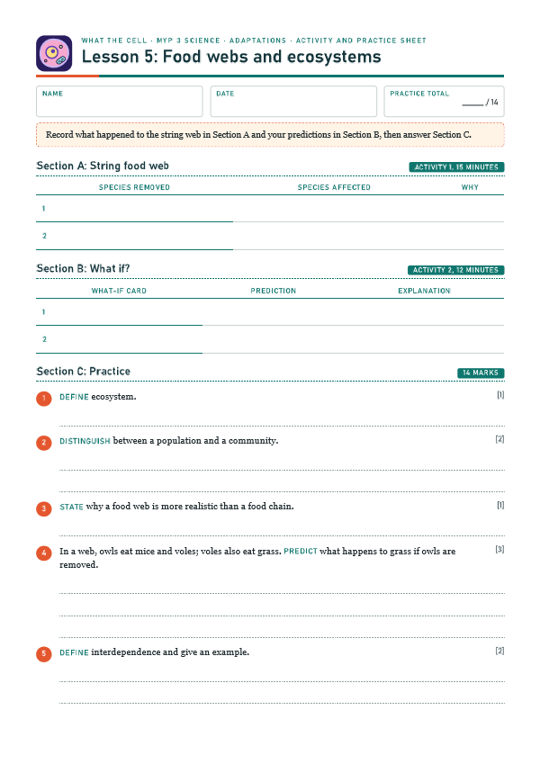

By the end of the lesson you can
- Construct a food web from information
- Define ecosystem, population and community
- Explain interdependence
- Predict the effect of removing a species
Keys: arrows or a presentation clicker move the slides, F for full screen. Slides with a red dot have a video or simulation.
Videos (all 5 minutes or less)
- 2:55
Food Chains and Food Webs
FuseSchool. While you watch: How is a web different from a chain? Slide 10.
Simulations
- Lab
Print and practise

Activity and practice sheet
Used in the lesson’s activities, with practice questions. Your teacher has the answers.
Download (PDF)Lesson 5 slides
All 17 slides in one file, to read again or print. The video buttons on the slides open YouTube.
Download the slides (PDF)Revising? The Revision tab on the unit page has the unit notes and review.
Class activity pack
Everything to print for the lesson’s activities: picture cards, sorting mats, station cards with their kit lists, and the teacher’s set-up notes. Print it before class.
Download the activity pack (PDF)Notes: Food webs and ecosystems
food web
Many food chains linked together. For example: in a mangrove forest.
ecosystem
All the living things in an area and their environment. For example: a coral reef.
population
All the organisms of one species in an area. For example: all the frogs in a pond.
community
All the populations in an area. For example: plants, insects, birds of a forest.
interdependence
Organisms in an ecosystem depend on each other. For example: bees and flowers.
scavenger
An animal that eats dead animals. For example: hyena, vulture.
mangrove
A coastal forest of salt-tolerant trees, nursery for fish and crabs. For example: Can Gio near Ho Chi Minh City.
Key words
| food web | linked food chains |
|---|---|
| ecosystem | community plus environment |
| population | one species in an area |
| community | all populations in an area |
| interdependence | depending on each other |